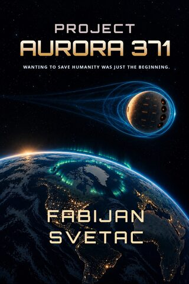
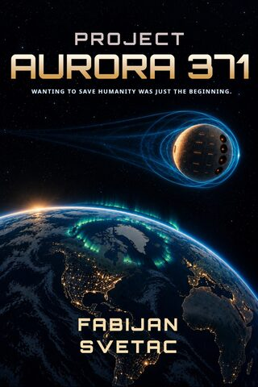
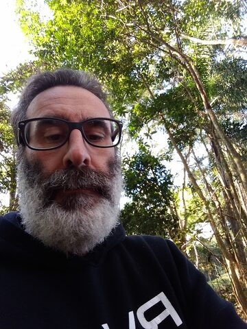

| Title | Project Aurora 371 |
| Author | Fabijan D. Svetac |
| Genre | Hard science fiction · generation ship · colonization |
| Published | October 3, 2026 (independent) |
| Formats | Kindle eBook (free with Kindle Unlimited) · paperback, 6×9 in, 500 pages |
| Price | eBook US$ 3.99 · paperback US$ 18.99 |
| Paperback ISBN | 979-81-72-80151-8 |
| Kindle ASIN | B0HFXD8DMG |
| Buy (all Amazon stores) | mybook.to/VzvA0D |
| @fabijan.svetac | |
| Newsletter | Zero Archive (free Technical Dossier) |
| Contact | fabijan.svetac@hotmail.com |
| For readers of | Seveneves (Neal Stephenson) · Children of Time (Adrian Tchaikovsky) · Aurora (Kim Stanley Robinson) |
Interviews are done in writing, by email.
Why is the Aurora a sphere?
Almost every starship in science fiction is long and pointed. Mine is a ball, and that wasn't a design choice. It was the engine's. The gravitational generator wraps itself in a field that spreads evenly in every direction, a bubble. Build something long and the bubble has to grow to cover the whole hull: more field, more energy, more waste. So the engineers did the opposite. As one of them puts it: "We don't force the field to adapt to the spacecraft. We make the spacecraft adapt to the field."
Your ship shares a name with Kim Stanley Robinson's Aurora. Is that deliberate?
The name comes from the Roman goddess of the dawn, not from his book. She stands for renewal, hope and new beginnings. But I'm glad of the company. His Aurora is the strongest case I know against leaving. I gave that case to one of my characters and let her keep it.
How is this different from Seveneves?
Stephenson gives humanity two years to save itself. I gave it ninety, which turns out to be harder: there's time to look away. When the ministers in my book hear "a few decades", they relax. A deadline two years away unites people. A deadline ninety years away tests them.
Chapter 2 already tells us they arrive. Why give that away so early?
I wanted the reader to stop asking whether they make it and start asking what it cost and who paid. An old man telling a boy how they got there is a different book from a countdown.
Where's the villain?
There's no villain because I don't think that's where the danger is. The hardest scene in my book is two people who love each other at a kitchen table with a form between them, and both of them are right. I find that more frightening than a saboteur.
Topics for a guest post or written interview
- Designing a starship around its engine instead of its looks.
- Hard SF with a human focus: the science serves a question about people.
- Governing 82 people between the stars: councils, minutes and the archivist as narrator.
- The people who stay behind: what a mission like this costs the families on Earth.
Excerpt: from the opening chapter, "The Numbers That Shouldn't Exist"
The first person to realize that something was wrong was not trying to save humanity. That winter morning, Dr. Miguel Azevedo was simply trying to find an error in his own calculations. […] The final graph of the simulation did not show a curve. It showed a date. Estimated year of irreversible biosphere collapse: 2137.








Read it free
The eBook is enrolled in Kindle Unlimited, so it is read through Amazon only. Reviewers can read it free with Kindle Unlimited, download it free on December 2–4, 2026 or December 25–26, 2026, or ask for a paperback copy.
fabijan.svetac@hotmail.com